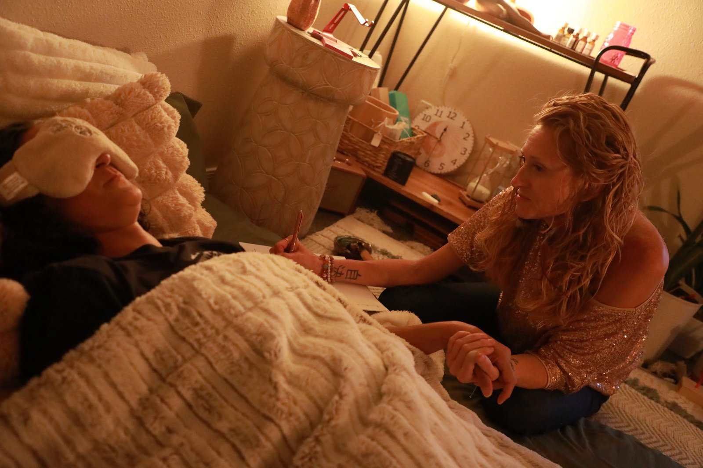

Anxiety and burnout
The mind that will not switch off and the body that stays braced, worked with from the nervous system up.
Holistic Therapist · Chandler, AZ
Somatic, EMDR-informed, parts-work therapy with Alicia Wright, LCSW, and her supervised intern Kyla Gordon. In person at the Mesa office or by secure telehealth from anywhere in Chandler.
For Chandler
Life in Chandler can move fast. Demanding work, a household to hold together, and a body that has quietly been keeping score the whole time. The Wild Within was built to feel less like an appointment and more like a sacred, unhurried space, somewhere you can set all of that down for fifty minutes and actually be met. Holistic therapy here means we honor the whole of you: the nervous system, the stories you carry, the parts of you that learned to cope, and the spirit underneath all of it.
How We Work

Most of the practice currently meets by secure telehealth, and for a lot of Chandler clients that is the simplest way to start. Same therapist, same depth of work, from your home office, your car in a quiet parking lot, or your couch once the house settles down.
If you want to be in the room, the office is at 2160 E Brown Rd, Suite 3 in north Mesa. From Downtown Chandler, Ocotillo, Fulton Ranch, or the Price Corridor, the Loop 101 and Loop 202 get you there, or you can take Gilbert Road straight north. Plenty of people mix the two, in person when they can and online when the week gets full.
Therapy is licensed in Arizona and available by telehealth anywhere in the state. Coaching is available nationwide. Not sure which one fits what you are looking for? Reach out and we will talk it through. Closer to the Gilbert side? See holistic therapy for Gilbert.

Each of these has its own page if you want to go deeper.
The mind that will not switch off and the body that stays braced, worked with from the nervous system up.
Body-based work for what talking alone has not reached. Breath, sensation, and the wisdom your body already holds.
Trauma, shame, self-doubt, and the patterns that keep circling back in new forms.
Reconnecting when two busy lives have drifted into logistics, and learning to really hear each other again.
Psychotherapy supported by the medicine, held with care and integration. Not an infusion clinic.
For the parent. The exhaustion, the guilt, and what your own childhood stirs up now that you are raising one.
Which one you see depends on what you are bringing and what fits your budget.

Founder & Lead Therapist
Licensed clinical social worker, EMDR trained, certified ketamine-assisted psychotherapy provider, certified tantra practitioner, and kundalini dance teacher. She holds a Master of Social Work plus an MA in Human Services focused on crisis response and trauma. Her deepest work lives in trauma, embodiment, couples, and KAP.

Therapist Intern · MSW Candidate
Arizona native, psychology degree from ASU, finishing her Master of Social Work at Capella. Several years with children and adults in substance use and crisis response settings. She works with perinatal mental health, parenthood, identity through life transitions, and teens, at a lower rate and under Alicia's clinical supervision.
Sessions range from $85 to $185 depending on therapist experience and training. See full pricing →

To pay for therapy, insurance needs a mental health diagnosis attached to your record, and then it decides how many sessions that diagnosis is worth. A lot of what people bring here does not fit neatly in that box: a relationship at a crossroads, grief, burnout, or simply wanting to go deeper than managing symptoms.
Being out-of-network keeps that choice with you. No diagnosis is required for billing, and nobody outside the room sets the pace. We provide superbills you can submit to a PPO for possible reimbursement, and HSA and FSA cards are accepted.
Rates run $85 to $185 depending on who you see. Working with Kyla is the lower end, with Alicia supervising her clinical work.
No intake paperwork and no commitment. You share what is going on, we share how we work, and you decide what feels right.
Schedule Free ConsultationSimple to start, at a pace that works for you.
A short call by phone or video. You tell us what brought you here, we tell you how we work, and together we see whether it is a fit. If it is not, we will help point you toward someone who is.
Secure telehealth from Chandler, or in person at the Mesa office on E Brown Rd. You can move between the two as your weeks change.
Weekly, every other week, or longer intensive sessions. Grounding and regulation first, then the deeper root work over time, at your pace.
Investment
Rates vary by therapist based on experience and training. Out-of-network with superbills for possible PPO reimbursement. HSA and FSA accepted.
Where
Secure video anywhere in Arizona, or in person at 2160 E Brown Rd, Suite 3 in Mesa, north of Chandler via the 101 and 202.
Length
Weekly, every other week, or intensive sessions. Come as you are, comfortable clothes welcome.
She taught me coping skills, gave me guided steps to consider making in my life, and hope for the future. I can now regulate my emotions versus numbing my feelings, and I have joy again, and a life that I embrace in the present moment while dreaming of an even better future.
Our office is in Mesa at 2160 E Brown Rd, Suite 3, reachable from Chandler by the Loop 101 and Loop 202 or straight up Gilbert Road. Secure telehealth is also available anywhere in Arizona.
We work with the whole person: the body, the nervous system, the parts of you that learned to cope, and the story underneath. In practice that means somatic and breath work, parts work, and EMDR alongside talk therapy.
Sessions range from $85 to $185 depending on which therapist you see. We are out-of-network and provide superbills you can submit for possible PPO reimbursement. HSA and FSA are accepted.
No, we are out-of-network. We provide superbills for possible reimbursement, and being cash-pay means no diagnosis is required for billing and no insurance company decides how long you get to work on something.
Yes. Both Alicia and Kyla work with pre-teens and teens. Kyla sees clients at a lower rate under Alicia's clinical supervision, which makes this an accessible place to start.
Yes. Secure telehealth is available anywhere in Arizona, and most of the practice currently meets that way. Coaching is available nationwide.
Yes. Start with a free consultation to see whether it is a fit before you book anything.


Medicine-supported psychotherapy, held with care and integration.
Learn moreThe first conversation is free. No commitment, no script, just a chance to see if we're the right fit.